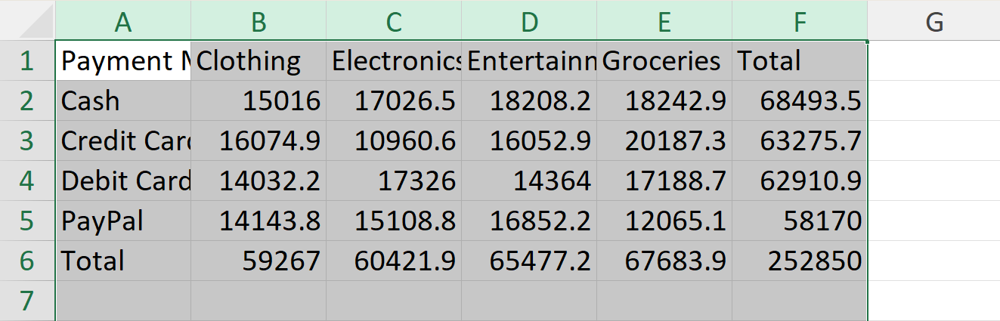
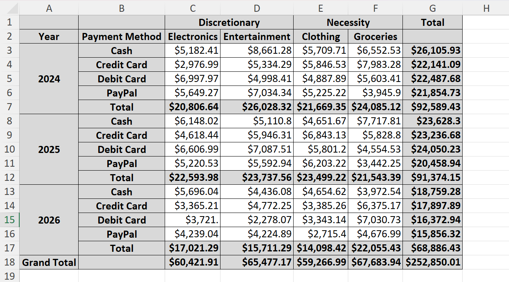

import pandas as pd
import numpy as np
import xlwings as xw
import osIn this post, I’m going to overview how to use Python’s xlwings and pywin32 libraries to produce formatted, human-readable tables in Excel. Beyond basic uses of xlwings, I’ll overview how to leverage pywin32 and the .api attribute to interact directly with the Excel object model using VBA-like Python code. The apporach allows one to produce highly custommizable Excel tables that should satisfy any audience that prefers formatted spreadsheet output.
Alongside this blog post, I’ve been developing an excel submodule in my swiss-code package, with various wrapper functions for xlwings and pywin32. I’ll showcase some of those functions here as well.
Problem Setup
Code for dataset generation
def simulate_df(num_transactions=1000):
np.random.seed(1)
customer_ids = np.random.randint(1000, 5000, num_transactions)
transaction_amounts = np.round(np.random.uniform(5, 500, num_transactions), 2)
payment_methods = np.random.choice(["Credit Card", "Debit Card", "PayPal", "Cash"], num_transactions)
categories = np.random.choice(["Electronics", "Clothing", "Groceries", "Entertainment"], num_transactions)
transaction_dates = pd.date_range(start="2024-01-01", periods=num_transactions, freq="D")
data = {
"transaction_id": range(1, num_transactions + 1),
"customer_id": customer_ids,
"amount": transaction_amounts,
"payment_method": payment_methods,
"category": categories,
"date": transaction_dates
}
df = pd.DataFrame(data)
return dfSay we have a dataset of customer transactions at a department store. I simulated this data arbitrarily.
df = simulate_df()
df.head()| transaction_id | customer_id | amount | payment_method | category | date | |
|---|---|---|---|---|---|---|
| 0 | 1 | 2061 | 177.75 | Debit Card | Electronics | 2024-01-01 |
| 1 | 2 | 1235 | 33.20 | Credit Card | Clothing | 2024-01-02 |
| 2 | 3 | 4980 | 118.26 | Credit Card | Groceries | 2024-01-03 |
| 3 | 4 | 2096 | 333.73 | Debit Card | Entertainment | 2024-01-04 |
| 4 | 5 | 4839 | 251.14 | Credit Card | Electronics | 2024-01-05 |
Let’s imagine the case where a stakeholder asks for a report on total dollars transacted, broken down by key categories and payment method. It’s fairly straightforward to use pandas to make an attractive pivot table that can serve as such a report, complete with human-readable, title-cased indices and columns. In this case, I’ve aggregated the total dollars spent, dissagregated by payment method and category of good.
Some users may prefer that the pivot table also include subtotals, and we can flexibly add those with margins=True.
dollars_by_method = df.pivot_table(
index="payment_method",
columns="category",
values="amount",
aggfunc="sum",
margins=True,
margins_name='Total'
)
dollars_by_method.index.name = "Payment Method"
dollars_by_method.columns.name = 'Category'
dollars_by_method| Category | Clothing | Electronics | Entertainment | Groceries | Total |
|---|---|---|---|---|---|
| Payment Method | |||||
| Cash | 15016.00 | 17026.47 | 18208.16 | 18242.88 | 68493.51 |
| Credit Card | 16074.92 | 10960.64 | 16052.85 | 20187.25 | 63275.66 |
| Debit Card | 14032.23 | 17325.96 | 14363.99 | 17188.67 | 62910.85 |
| PayPal | 14143.84 | 15108.84 | 16852.17 | 12065.14 | 58169.99 |
| Total | 59266.99 | 60421.91 | 65477.17 | 67683.94 | 252850.01 |
That’s a fine-enough pandas dataframe, but now the question arises of how to best serve this data to the end-user.
There are several options – lately I’ve been using Quarto reports or else Tableau dashboards for these sorts of analytics projects. However, those formats are very “finalized” and can be a little unsatisfying for end-users who want to further filter or modify table output. If that audience doesn’t use R/Python, access to underlying .ipynb or .qmd files will not be helpful. This is the case where I think that spreadsheet output, and specifically reproducible, formatted Excel worksheets, can be very potent.
Getting connected to Excel
To write a pandas dataframe out to Excel, we’ll work through the Excel/xlwings object hierarchy:
- Application1 \(\rightarrow\) Work Book \(\rightarrow\) Sheet \(\rightarrow\) Range.
In xlwings we’ll establish a xw.Book object, which either creates or opens an existing excel file, in this case test.xlsx.
filename = "test.xlsx"
if os.path.exists(filename):
wb = xw.Book(filename)
else:
wb = xw.Book()
wb.save(filename)
wb<Book [test.xlsx]>Next, we establish an xw.Sheet within that xw.Book object, in this case first_test.
sheet_name = 'first_test'
try:
sheet_new = wb.sheets.add(sheet_name)
except ValueError:
sheet_new = wb.sheets[sheet_name]
sheet_new<Sheet [test.xlsx]first_test>At this point, we can select the sheet, sheet_new, select a start range, “A1”, then set it’s value with our dataframe object, dollars_by_method. This will export the full dataframe into the spreadsheet.
sheet_new.range("A1").options(index=True, header=True).value = dollars_by_methodThen, when we save the book, we can inspect the output. Note that the data were entered into cell A1 and expanded as needed.
wb.save()
This is a fairly unattractive table, with no formatting and with poorly fitted columns. This is also equivalent to what we could get if we simply used the df.to_excel() method within pandas. We’ll proceed to formatting this table, where we get the real value out of xlwings.
Interacting with the Excel Object Model
The most powerful aspect of xlwings is that it allows for interacting with the Excel object model – an API for programmatically editing Excel spreadsheets. One would typically interact with Excel’s object model via VBA code, but xlwings and pywin32 together allow for us to use Python for a conceptually similar workflow.
Note that Microsoft provides a few key pieces of documentation that augment the xlwings’ own API reference.
- An overview of the object model concept and typical VBA workflows in in the “VBA Programming 101” section of the Official VBA Reference, and,
- A complete reference for the Excel object model in the Excel VBA Reference.

We can access the object model API from an xw.Sheet object by calling the .api attribute:
sheet_new.api<win32com.gen_py.Microsoft Excel 16.0 Object Library._Worksheet instance at 0x2119765775552>This is an instance of VBA’s Worksheet object, which has a documentation page in Excel’s VBA reference.

Where python objects have attributes and methods, The VBA Worksheet object has properties and methods. One particularly useful property is UsedRange, which stores the range of cells that have data.
AutoFit
sheet_new.api.UsedRange<win32com.gen_py.Microsoft Excel 16.0 Object Library.Range instance at 0x2119974654112>For very popular properties and methods, such as UsedRange, the xlwings api has simplified python attributes and methods that allow one to avoid explicity access the object model api. E.g. we can call xw.Sheet.used_range
sheet_new.used_range<Range [test.xlsx]first_test!$A$1:$F$6>I’ll stick with the former approach for now.
From the UsedRange attribute, which is a Range object, we can access the EntireColumn attribute, which selects the entire columns for a given range.
sheet_new.api.UsedRange.EntireColumn<win32com.gen_py.Microsoft Excel 16.0 Object Library.Range instance at 0x2120021827200>This is equivalent to the following selection:

For that Range object, we will now call the Autofit() method.
sheet_new.api.UsedRange.EntireColumn.AutoFit()TrueWe get the following in Excel:

sheet_new.api.UsedRange.EntireColumn.AutoFit()
sheet_new.api.UsedRange.EntireRow.AutoFit()
wb.save()Number Formatting
Now we’ll move onto formatting the data, which represent dollar totals. I’ll be using a mix of xlwings wrapper methods/attributes, and explicit calls to the Excel object model via .api with no real commitment as to when to use which. Given that we get equivalent results, I’m of the mind that it doesn’t particularly matter.
We can apply dollar formatting to any range in Excel via the NumberFormat property – number_format in xlwings. But to do that, we’ll first need to define a range that captures exactly where there is numerical data.
To do that, I’ll first select the top row of the sheet and retrieve its values, which are the column headers:
headers = sheet_new.range("A1").expand("right").value
headers['Payment Method',
'Clothing',
'Electronics',
'Entertainment',
'Groceries',
'Total']We now want to access those columns that actually contain data (Payment Method is the index title and doesn’t contain data). We’ll do this by taking the index of Clothing, the first column with data, adding one (Excel indexes from 1 whereas python indexes from 0, so adding 1 will be common in a lot of these workflows), then retrieving the letter that corresponds to that index:
col_index = headers.index('Clothing') + 1
col_letter = xw.utils.col_name(col_index)
col_letter'B'Given the column letter, we can now select all of the data in that column, then set the number format:
selection = f"{col_letter}2:{col_letter}1048576"
selection'B2:B1048576'sheet_new.range(selection).number_format = "$#,###.##"
wb.save()
To format all of the data, we’ll just iterate through the columns and execute that same chunk of code:
for col in dollars_by_method.columns:
col_index = headers.index(col) + 1
col_letter = xw.utils.col_name(col_index)
selection = f"{col_letter}2:{col_letter}1048576"
sheet_new.range(selection).number_format = "$#,###.##"
wb.save()
Text Formatting
We’ll use a similar process to make the column and index headers bold. I’ll translate the dataframe’s headers into an Excel range as follows:
last_column_index = dollars_by_method.reset_index().shape[1]
end_col = xw.utils.col_name(last_column_index)
selection = f"A1:{end_col}1"
selection'A1:F1'With that range selection, we can access the .font attribute in xlwings, which corresponds to the Font object in the Excel object model, and set bold = True.
header_range = sheet_new.range(f"A1:{end_col}1")
header_range.font.bold = True
wb.save()
I’ll do the same with the index, capturing its range then setting bold = True
end_row = dollars_by_method.reset_index().shape[0] + 1
selection = f"A1:A{end_row}"
selection'A1:A6'header_range = sheet_new.range(selection)
header_range.font.bold = True
wb.save()
Shading and Borders
We’ll be doing much the same when it comes to shading in rows/columns – we define a range that captures an entire target row/column, then access the appropriate object to format that range.
total_col = f"{end_col}1:{end_col}{end_row}"
total_col'F1:F6'In excel, we set colors using RGB codes, which I like to get from https://htmlcolorcodes.com/, though any color-swatch site shoudl suffice.
total_col = f"{end_col}1:{end_col}{end_row}"
sheet_new.range(total_col).color = (242, 242, 242)
total_row = f"A{end_row}:{end_col}{end_row}"
sheet_new.range(total_row).color = (242, 242, 242)
print("Total Column:", total_col, "\nTotal Row:", total_row)
wb.save()Total Column: F1:F6
Total Row: A6:F6
For defining borders, we’ll just access the Borders object from the UsedRange, which will apply the borders only where there is currently data. We set two properties for the Border:
- LineStyle, e.g. solid versus dashed.
- Weight, e.g. hairline versus thick.
- There are several other properties we can change as needed in the Border object’s properties, but I typically just focus on style and weight.2
sheet_new.used_range.api.Borders.LineStyle = 1
sheet_new.used_range.api.Borders.Weight = 2
wb.save()
A Package approach
xlwings is great, but sometimes it can be a little involved to bridge the gap between working on a pandas dataframe and an Excel object. For example, formatting a column requires finding that column within Excel then programatically defining its range. This can require a lot of code, so I defined a set of wrapper functions, and eventually an entire class, ExcelDataFrame, to facilitate moving between pandas and Excel. This class is part of the submodule, swiss_code.excel, which is a part of my larger swiss_code package.
You can download as follows:
pip install git+https://github.com/peter-amerkhanian/swiss-code.git@mainEnvironment specific setup
import sys
sys.path.append('../../../swiss-code/src')
%load_ext autoreload
%autoreload 2Once you have the package installed, you can import the excel submodule as follows:
from swiss_code.excel import excelGiven a pandas dataframe and an Excel sheet, we can establish an ExcelDataFrame object via the excel.write_df_to_excel function. This will write the pandas dataframe into the Excel sheet, and establish an object tha can be further manipulated.
wb = excel.get_or_create_workbook("test.xlsx")
function_sheet = excel.select_sheet('function_sheet', wb)
edf = excel.write_df_to_excel(df=dollars_by_method,
sheet=function_sheet,
cell_start="A1")
edfACTIVE ExcelDataFrame(sheet=function_sheet, range=$A$1:$F$6, df_shape=(5, 5))We’ll now complete all the same formatting tasks as before via method calls:
for col in edf.df.columns:
edf.number_format_column(col, format="$#,###.##")
edf.make_borders()
edf.format_indices(bold=True, color=None)
edf.format_row('Total', bold="ignore", color="light_grey")
edf.format_column('Total', bold="ignore", color="light_grey")
excel.close_out_book(wb)Once excel.close_out_book(wb) has been called, the edf no longer has an active connection to any workbook.
edf DISCONNECTED ExcelDataFrame(sheet=NA, range=NA, df_shape=(5, 5))Complex Tables
df['Year'] = df['date'].dt.year.astype(str)
df["class"] = df["category"].map(
{
"Clothing": "Necessity",
"Groceries": "Necessity",
"Electronics": "Discretionary",
"Entertainment": "Discretionary",
}
)dollars_by_method_yr = pd.concat(
[df[df['Year'] == year].pivot_table(index=["payment_method"],
columns=["class", "category"],
values="amount",
aggfunc="sum",
margins=True,
margins_name="Total")
.reset_index()
.assign(Year=year)
.set_index(['Year', 'payment_method'])
for year in ['2024', '2025', '2026']],
axis=0)
dollars_by_method_yr.index.names = ["Year", "Payment Method"]
dollars_by_method_yr.columns.names = ['Class', 'Category']
dollars_by_method_yr = dollars_by_method_yr.fillna(0)
dollars_by_method_yr.loc[("Grand Total", ""), :] = df.pivot_table(
index=["class", "category"],
values="amount",
aggfunc="sum",
margins=True,
margins_name="Total")["amount"]
dollars_by_method_yr| Class | Discretionary | Necessity | Total | |||
|---|---|---|---|---|---|---|
| Category | Electronics | Entertainment | Clothing | Groceries | ||
| Year | Payment Method | |||||
| 2024 | Cash | 5182.41 | 8661.28 | 5709.71 | 6552.53 | 26105.93 |
| Credit Card | 2976.99 | 5334.29 | 5846.53 | 7983.28 | 22141.09 | |
| Debit Card | 6997.97 | 4998.41 | 4887.89 | 5603.41 | 22487.68 | |
| PayPal | 5649.27 | 7034.34 | 5225.22 | 3945.90 | 21854.73 | |
| Total | 20806.64 | 26028.32 | 21669.35 | 24085.12 | 92589.43 | |
| 2025 | Cash | 6148.02 | 5110.80 | 4651.67 | 7717.81 | 23628.30 |
| Credit Card | 4618.44 | 5946.31 | 6843.13 | 5828.80 | 23236.68 | |
| Debit Card | 6606.99 | 7087.51 | 5801.20 | 4554.53 | 24050.23 | |
| PayPal | 5220.53 | 5592.94 | 6203.22 | 3442.25 | 20458.94 | |
| Total | 22593.98 | 23737.56 | 23499.22 | 21543.39 | 91374.15 | |
| 2026 | Cash | 5696.04 | 4436.08 | 4654.62 | 3972.54 | 18759.28 |
| Credit Card | 3365.21 | 4772.25 | 3385.26 | 6375.17 | 17897.89 | |
| Debit Card | 3721.00 | 2278.07 | 3343.14 | 7030.73 | 16372.94 | |
| PayPal | 4239.04 | 4224.89 | 2715.40 | 4676.99 | 15856.32 | |
| Total | 17021.29 | 15711.29 | 14098.42 | 22055.43 | 68886.43 | |
| Grand Total | 60421.91 | 65477.17 | 59266.99 | 67683.94 | 252850.01 | |
wb = excel.get_or_create_workbook("test.xlsx")
complex_sheet = excel.select_sheet('complex_sheet', wb)
edf = excel.write_df_to_excel(dollars_by_method_yr,
complex_sheet,
cell_start="A1")
edf.merge_axis(index=1, axis=1)
edf.merge_axis(index=1, axis=0)
edf.format_indices(bold=True, color="light_grey")
for col in edf.df.columns:
edf.number_format_column(col, format="$#,###.##")
for year in df['Year'].unique():
edf.format_row((year, 'Total'), bold=True, color="light_grey")
edf.format_row(('Grand Total', ''), bold=True, color="light_grey")
edf.format_column(('Total', ''), bold=True, color="light_grey")
edf.make_borders()
excel.close_out_book(wb)
Footnotes
Dealing with the Application in
xlwingsis optional, and the workflow outlined in this blog just ignores it.↩︎I found out about these pages through this excellent stackoverflow answer↩︎
Citation
BibTeX citation:
@online{amerkhanian2025,
author = {Amerkhanian, Peter},
title = {Using {The} {Excel} {Object} {Model} in {Python}},
date = {2025-03-12},
url = {https://peter-amerkhanian.com/posts/excel-wings/},
langid = {en}
}
For attribution, please cite this work as:
Amerkhanian, Peter. 2025. “Using The Excel Object Model in
Python.” March 12, 2025. https://peter-amerkhanian.com/posts/excel-wings/.